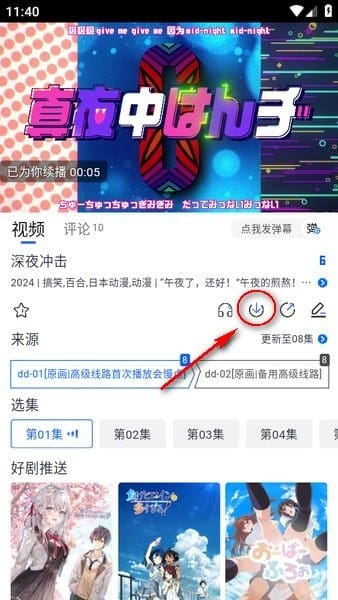

omofun 快问快答：追番补漫一站式搞定，你想知道的都在这
整理一篇关于 omofun 的快问快答——从是什么、怎么装、搜索技巧到漫画筛选、缓存入口、弹幕调节，覆盖新老用户最常问的八个问题。
整理一篇关于 omofun 的快问快答，把新老用户最常问的问题集中讲清楚。
omofun 是什么？定位在哪？
一句话：omofun 是一款主打番剧与漫画双内容线的中文聚合应用，覆盖日漫、国漫、韩漫等多个地区的海量作品。它的核心定位是「追番补漫一站式入口」——不用在视频站和漫画 App 之间来回切，一个应用把两条线都搞定。适合同时追番和看漫画、又不想装一堆 App 的用户。omofun 提供官网供了解全貌。
怎么装？难不难？
不难。直接从官方下载拿安装包，Android 和 iOS 都有对应版本。Android 用户装完如果提示安装来源问题，去设置里允许未知来源即可。iOS 用户如果 App Store 搜不到，可能需要换区或通过 TestFlight 渠道获取，具体看下载页的指引。安装过程本身没什么坑，真正容易卡住的是登录——缓存功能与登录态绑定，没登录的话下载按钮会置灰。
搜索有哪些隐藏技巧？
omofun 的搜索框比看上去能打。除了完整作品名，还支持：圈内常用简称、日文原名直接搜、按作者名检索全部作品、输角色名找到其登场作品、拼音首字母简拼（比如「ylbd」能搜到《一念永恒》这类长名）。还有两个实用细节：常见错别字会被自动纠正，译名不确定时换语言再试一次命中率更高。搜不到时先检查是不是切到了不相关的分区标签页——搜索结果会受当前内容区影响，这是新手常踩的小坑。
漫画库怎么筛选才不踩雷？
O 站漫画库的体量和番剧线是同一量级，靠四级筛选才能高效捞出目标。先定地区（日漫偏经典长篇、韩漫以彩色条漫见长、国漫崛起作品不少），再选题材标签（热血、悬疑、校园、恋爱等二十余种可叠加），然后按连载状态分流——补经典选「已完结」，追更新选「连载中」，排序用评分降序最稳。三个常用组合：日漫+已完结+评分降序（从高分完结作开补几乎不踩雷）、韩漫+连载中+热度降序（条漫竖滑体验好）、悬疑题材+最新排序（刚上架的作品竞争少）。榜单和筛选器互补，筛选器负责按口味找，榜单负责看大家都在看什么。
缓存下载按钮在哪？找不到怎么办？
这是高频问题。omofun 的下载入口随版本布局有两处常见位置：播放页右上角的下载图标（箭头向下），或者详情页简介与选集之间一排操作按钮里的「下载/缓存」字样。找不到时对照这个清单排查：完全没有按钮——该作品版权受限不允许缓存，属正常；按钮点了没反应——没登录，缓存功能和登录态绑定；按钮置灰——旧版本界面，升级后入口可能挪位；弹出选集后开始报错——存储不足或网络问题。快速验证方法：挑一部热门番进播放页，右上角有下载图标且能弹出选集，说明缓存功能本身没问题，问题出在具体作品或账号状态上。

弹幕怎么调最舒服？
弹幕设置面板是播放体验里被低估的一块。能调的项目包括：显示密度（从全部显示到少量分档）、显示区域（半屏留出画面上半部，适合打斗密集的番）、字号与透明度、屏蔽词列表（命中直接不显示）。屏蔽词有三种实用思路：防剧透把关键角色名和知名梗的剧透变体加进去（追悬疑番必备）、防刷屏把高频空刷的梗词加进去画面立刻干净、按番维护换番时记得回头清理过期的词。两套常用配置：追新番首播用中密度+半屏+剧透关键词开满，补日常番直接全部显示+全屏就行。入口在播放页弹幕开关旁的设置图标，参数即时生效不用重进播放页，更细的调法可以翻omofun文档。
有没有坑要注意？
有几个小地方值得提。第一，缓存功能必须登录，没登录的用户发现按钮置灰别慌，先去注册登录。第二，屏蔽词列表全局生效，换番时如果之前加了针对上一部番的屏蔽词，可能会把当前番里正常的弹幕也一起挡掉，记得定期清理。第三，番剧和漫画是两个独立分区，搜索结果受当前分区影响，搜不到时先看看是不是切错了分区标签。第四，长篇连载漫画补起来是无底洞，追新坑之前最好先看一下总章节数。
值不值得装？
如果你同时追番和看漫画，omofun 值得装。一个应用覆盖两条内容线，省去多 App 切换的麻烦；搜索、筛选、缓存、弹幕调节这几块核心功能都做得扎实，没有明显短板。唯一要注意的是登录和版本更新——缓存功能绑登录态，旧版本的下载入口可能和新版不一样，遇到问题先确认是不是最新版。
这套资料在 omofun 的三个仓库都能拿到，方便不同网络环境下访问：GitHub 主仓库，Gitee 国内镜像加速访问，GitCode 同步备份。